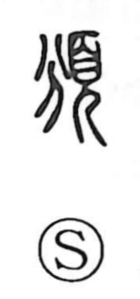

頒

Uncategorized
Kun: wakatsu | On: han
to distribute ・ to apportion ・ to confer
Explanation
頒 is a phono-semantic character. The element 分 supplies the sound (han) and hints at the idea of dividing or sharing, while 頁 depicts a person in ceremonial headgear, bowed in reverence. Together they evoke the formal bestowal of portions at a rite—goods being divided and granted in a dignified, ceremonial setting. This sense lives on in compounds such as 頒賜 (to distribute and grant) and 頒氷 (to allot portions of ice). In early literature it can also touch the head motif, as in the Shi Jing line about fish among the pondweed, and the graph is sometimes used interchangeably with 斑 in expressions like 頒白 for hair streaked with white.